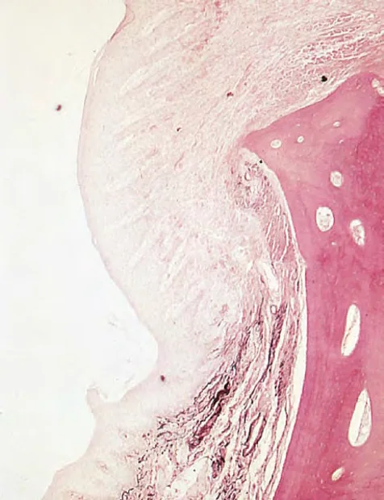

نسخه استخراجشده؛ ترجمه یا تأیید علمی انجام نشده است. وضعیت: captured
بافت همبند لثه که لامینا پروپریا نامیده میشود، بخش اصلی حجم لثه را میسازد و استحکام آن را تأمین میکند.
فیبرهای کلاژن: رویهم حدود ۶۰ درصد حجم بافت همبند؛ بیشترشان کلاژن نوع I است و عامل اصلی استحکام کششی لثه به شمار میرود.
فیبروبلاست: فراوانترین سلول بافت همبند لثه با حدود ۶۵ درصد جمعیت سلولی. سازنده کلاژن و ماده زمینهای و مسئول بازسازی بافت.
ماده زمینهای (Ground Substance): شامل پروتئوگلیکانها و گلیکوپروتئینها که فضای بین فیبرها را پر میکند.
عناصر عروقی، عصبی و سلولهای دفاعی: ماستسل، ماکروفاژ و در حالت التهاب، لنفوسیت و پلاسماسل.
📌 نکته: کلاژن نوع IV در لامینای بازال و کلاژن نوع III در فیبرهای رتیکولر دیده میشود، اما ستون فقرات لثه کلاژن نوع I است.
فیبرهای لثهای دستههای کلاژنی هستند که لثه را سر جای خود نگه میدارند. چهار گروه اصلی را باید بشناسی:

دنتوژنژیوال (Dentogingival): از سمان بالای کرست شروع شده و بهصورت بادبزنی داخل لثه آزاد و چسبنده پخش میشود. پرشمارترین گروه است.
دنتوپریوستئال (Dentoperiosteal): از سمان به سمت آپیکال رفته و از روی کرست استخوان عبور کرده و به پریوست میچسبد. دندان را به استخوان مهار میکند.
سیرکولار (Circular): مانند یک حلقه دور گردن دندان میچرخد و به سمان نمیچسبد. لثه آزاد را به دندان میفشارد.
ترانسسپتال (Transseptal): از سمان یک دندان، از بالای کرست استخوان بیندندانی عبور کرده و به سمان دندان مجاور میرسد. دندانهای مجاور را به هم میدوزد.
مهار کردن لثه مارجینال به سطح دندان و ایجاد قوام سفت آن.
مقاومت در برابر نیروهای جویدن و جلوگیری از جدا شدن لثه هنگام غذا خوردن.
اتصال لثه آزاد به سمان و به لثه چسبنده مجاور.
حفظ ارتباط بین دندانهای مجاور از طریق فیبرهای ترانسسپتال.
فیبرهای ترانسسپتال ویژگی قابلتوجهی دارند: حتی پس از تخریب استخوان بیندندانی در بیماری پیشرفته پریودنتال، این فیبرها دوباره بازسازی میشوند و باقی میمانند. به همین دلیل در نمونههای بافتی بیماری پیشرفته هم دیده میشوند.
در ارتودنسی نیز همین فیبرها یکی از عوامل مهم عود (Relapse) پس از درمان هستند؛ به همین علت تکنیک فیبروتومی فوقکرستال (CSF) برای قطع آنها ابداع شده است.
⚠️ اشتباه رایج ۱: فیبرهای سیرکولار تنها گروهی هستند که به سمان نمیچسبند.
⚠️ اشتباه رایج ۲: فیبرهای لثهای با فیبرهای لیگامان پریودنتال فرق دارند؛ فیبرهای لثهای بالای کرست استخوان قرار میگیرند.